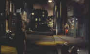

|
Peeping Tom(SE)/A-,A- |
|
Voyager/1960/109m/ANA 1.66 |
You could say that Peeping Tom is the film that closed the door on Michael Powell's film career, so harsh was critical reception. It is mind boggling to think that a creative and daring filmmaker such as Powell would make his last film at the age of 55 while still at the height of his cinematic power simply because of what the industry perceived as one, wild, misstep. Nevertheless, it appears that this was the case.
 |
Peeping Tom is a difficult and modern film, more
comfortable in company with contemporary sophistication, though
it is a very stylized and elegant production. Powell attempts to
draw his audience close to the workings of a serial killer. Like
the killer, the audience is placed in a similar position through
Powell's use of camera perspective that often replicates exactly
what the perpetrator is seeing.
As Mark Lewis, the twisted and perverse
mad man, Carl Boehm is eerily sympathetic, which exacerbates the
audience's moral confusion. Choosing to make Mark Lewis the
product of an abused childhood serves to reinforce the emotional
conflict of audience. It is fascinating to observe the everyday
movement's of Lewis, often desperately seeking to control the
impulse which he realizes will finally overtake the conflicting
gentle aspect of his nature.
Powell's choice of making Lewis a
cinematographer working within the structure of the British
studio system was a daring slap at his own industry. The theme
of voyeurism is explored on many levels by Powell. The
filmmakers are voyeurs, as are the audience, as is the
killer.
 |
The viewer's fascination with watching is hypnotic; as he is drawn into the precisely chaotic web crafted by the "voyeur" director, the realization that the director of Peeping Tom has turned an accusing finger outward from the screen is a stinging slap.
 |
From the very opening setting, painted in tawdry expressionistic
tones of color, of a street that slid off an Edward Hopper
painting, sculpted with foreboding shadows, Powell recalls the
somber noirish mood of early black and white German cinema. The
whistling in the background clearly is an allusion to Fritz
Lang's M. All of the sets succeed in creating an
undefined creepy discomfort. The deliberate pacing mimics the
perpetual clock of the demented serial killer, unrelenting in
its metronome ticking, leading inevitably to another
uncontrollable act of desperate violence.
Boehm has been perfecting cast by
Powell as a craftsman in the art of cinematic dementia. His
clean cut and mild mannered look in no way outwardly suggests
the seething perversion within him, yet it is this extreme
underplaying of the role that makes it most convincing. Anna
Massey, wide-eyed and innocent, compliments Boehm very well as
the neighbor downstairs who falls for the shy cameraman. Moira
Shearer, Powell's incandescent leading lady of The Red Shoes,
makes her last feature film appearance again under the guidance
of mentor Powell, memorably moving through the steps of a dance
of death to the rapid beating of the excellent jazz score. What
at first might seem like an excuse for Shearer to show off her
dancing versatility, the long thirteen plus minute sequence is
extremely effective at building unbearable tension climaxing in
a full-throated lens-filling scream.
All of the production elements of Peeping
Tom are first rate, from the appropriately grating jazz
scoring by Brian Easdale and Wally Stott to the stark and
economical set design by Arthur Lawson. Cinematographer Otto
Heller gives Powell everything he could ask for in capturing the
many layers of Peeping Tom.
A welcome addition to DVD, Peeping
Tom is delivered in a fine special edition from Voyager as
part of its Criterion Collection. Film grain is tightly
replicated with consistently sharp images. There is no
noticeable enhancement. Colors are vital, almost hyper-real.
Capturing Powell's garish palette adds to the horror of
Peeping Tom. Shadow detail is outstanding giving visual life
to the details in the periphery of the picture. There's good
light output throughout. The print is in very good
condition and I am sure that Powell, who died in 1990, would be
extremely proud to see Peeping Tom in this sharply
transferred classy edition. Voyager has provided an audio
commentary by Laura Mulvey, which, while at times is informative
and insightful, too often falls back on describing the scene we
are watching. It is still a cut above the typical scholar
commentary. A British produced television program about writer
Leo Marks adds another layer of pleasure to the special edition.
Peeping Tom is a must-DVD for film lovers!
|
The Feature
Archive has articles ranging from Akira
Kurosawa to Blonde
Bimbos, The
Heistmasters and Frank
Darabont. |
|
Imaging
Science Foundation HOT
LINKS
|
|
Home Theater Reference Reviewing System When you read a DVD review it's of utmost importance to know what equipment is being used to evaluate quality. Click on the projectors to find out more. |